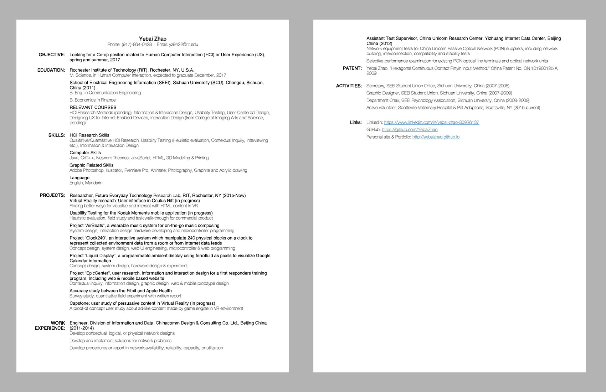

My Resume
Click image below to open, please take the PDF file as the offical version.
ME
The real question I have been searching for years has always been: How do I imagine my future career?
Dan Bricklin, the father of the spreadsheet, summarized at the end of his TedTalk which works as a beacon for we the followers:
“… that you, too, should take your unique backgrounds, skills and needs. And build prototypes to discover and work out the key problems. And through that, change the world.”
When Dan Bricklin was Harvard Business School in 1979, he put his knowledge in computer science into a program helping him calculate his MBA homework. Years later, it evolved into the first spreadsheet program named VisiCalc on Apple II. VisiCalc revolutionized how people process numeral data and became the killer app that introduced personal computer to every corner of this world. Almost every innovation is born from the spark of fields collision, so is this story.
I have a wide spread of interests, and I love crossovers. I spent my life in different subjects, cities, jobs and cultures. Yes, it has always been a pleasure to bring some new blood to somewhere new. My hands love holding screwdrivers, my nose loves the smell of solder, my ear loves the sound of motor and my eyes are sharp to colors and shapes, yet my brain is always open to the knowledge of the future. I can use my diverse experience to create many possibilities, but I usually known as a responsible, down to earth, ingenious and thoughtful man.
Every motion is made possible by the difference in entropy*, every creation is made by the collision of thoughts. Many of my projects were focusing on combining digital world with physical world, I do programming and hardware prototyping at the same time. I also love user study which our team use systematic technique to complete the iteration design process. The HCI project also taught me many usability research tools such as interviewing, data collection, controlled experiment and data analysis. With these skills, I can gather information more efficiently in the design process, and implement them with my own hands.
*It’s one way to interpret the second law of thermodynamics.Building this Site
When I started building this website, I have little knowledge about HTML and CSS. I was better at JS from former projects involving inter-platform data transmitting. While there are many ready-to-use services like Wix.com and squarespace.com, and Adobe Muse allows you draw the page out, I picked the old name: Dreamweaver. This decision is made for several reasons:
Therefore, I spent more time in w3schools reading demo code and references than searching for templates. It's not I hate website looking awesome fashionable, but the content is always more important than style to me. Although I have been a designer for many years, I wish to keep the website as the vessel of my thoughts and words, here is what I did.